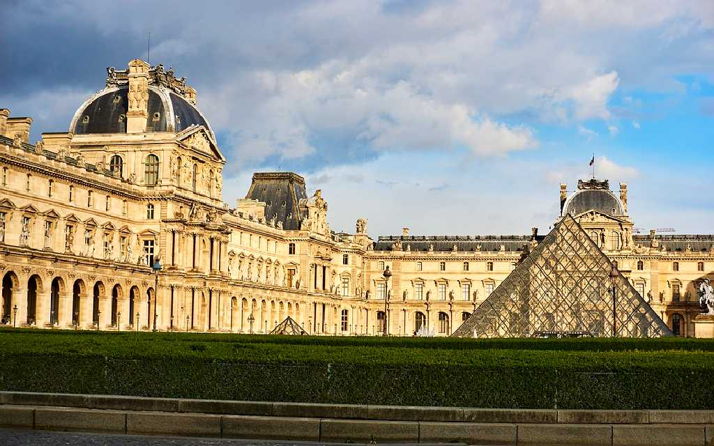
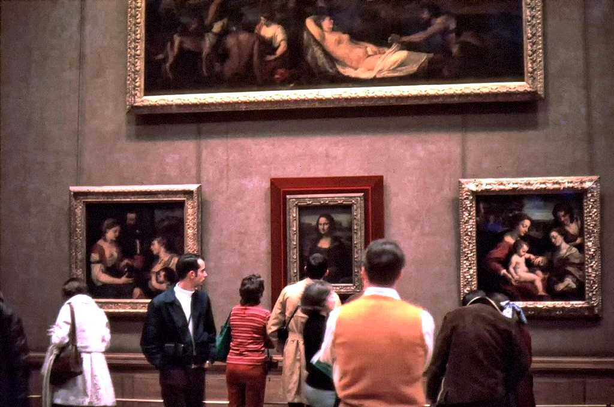
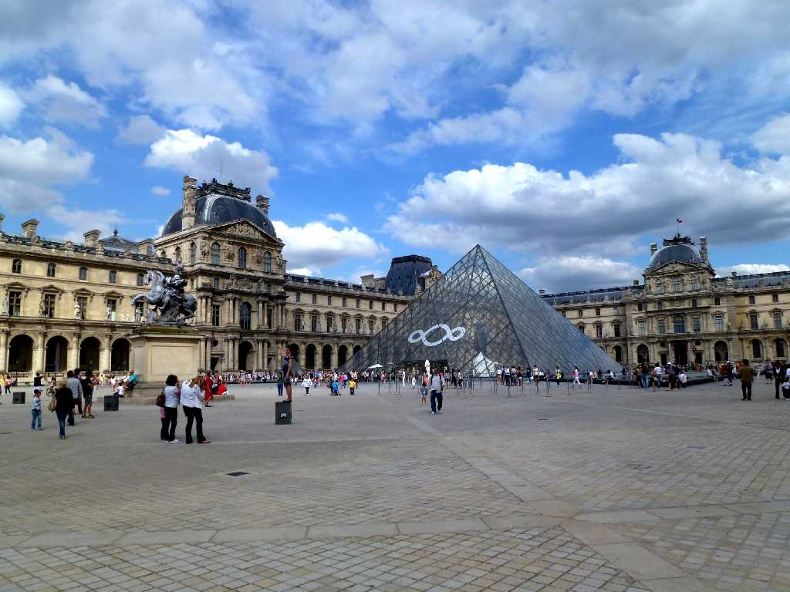
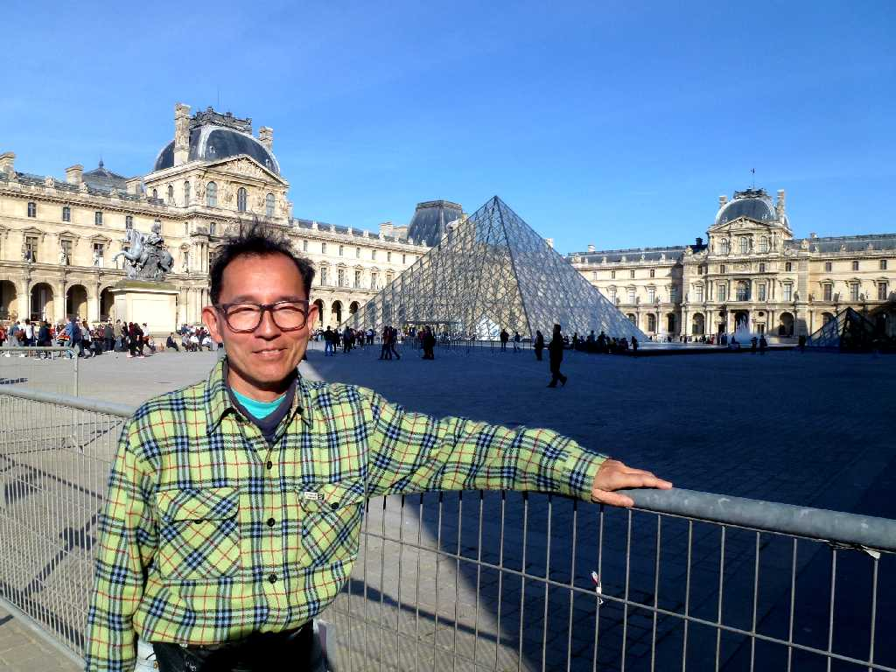

August 1973 Louvre
西洋美術や世界史の教科書に出てくる作品がずらりと並んでおりルーヴル美術館をすべて回るとマラソンコースだそうです

Monna Lisa
レオナルドダヴィンチ晩年の作品モナリサ


August 6 2013 Lovre
８０日間世界一周鉄道の旅で４４日目 学生時代以来約４０年ぶりの再訪問

March 20 2014 Lovre
モロッコ周遊の旅で帰国便のパリ乗り継ぎを利用し８０日間世界一周鉄道の旅以来８ヶ月ぶりにパリのゲストハウスに滞在して観光